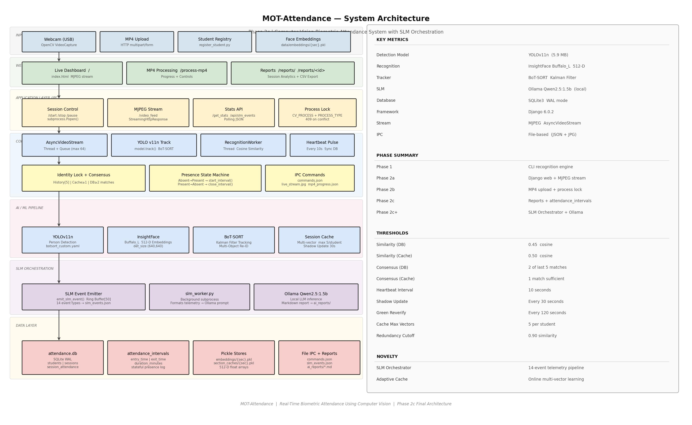
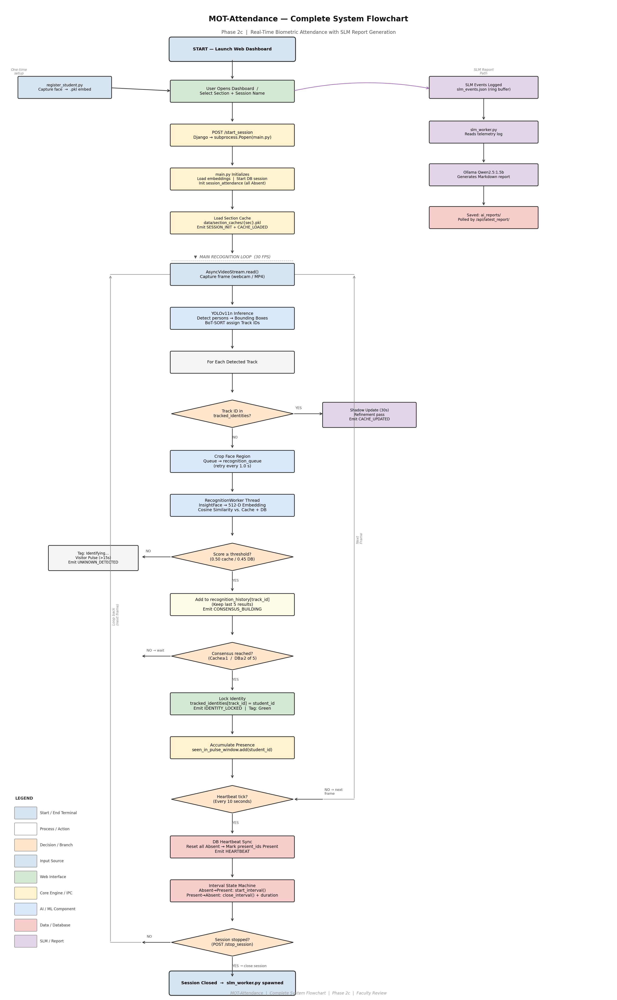
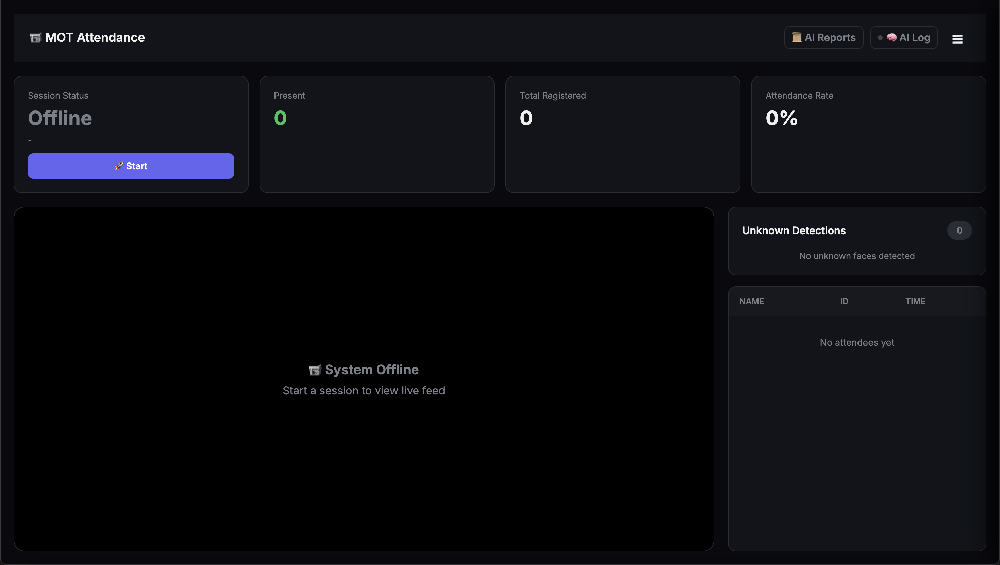
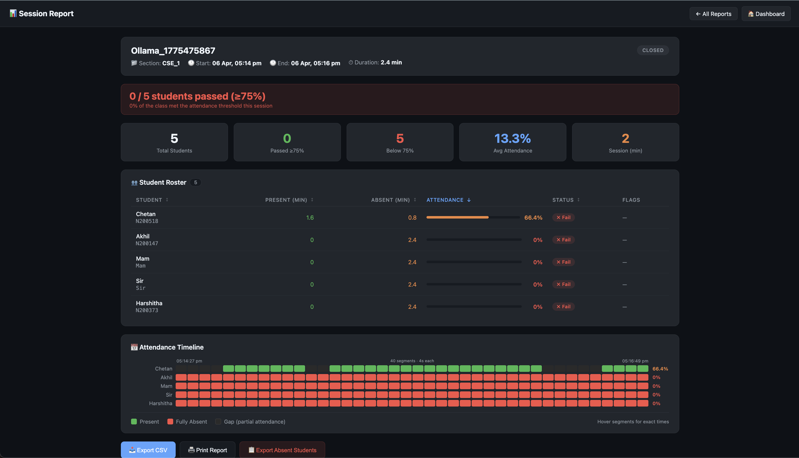
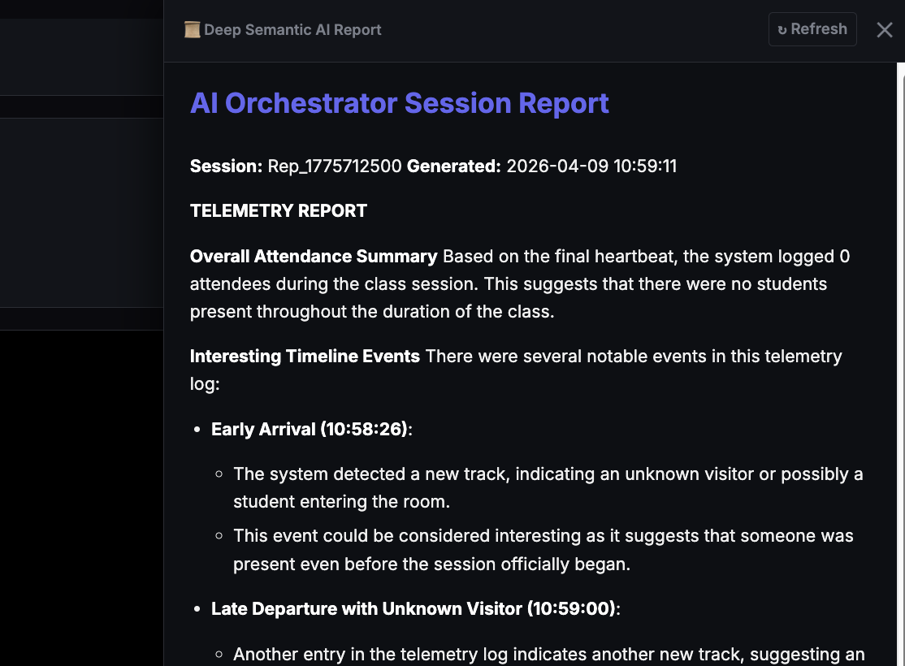

Real-Time Biometric Attendance Management System
Rajiv Gandhi University of Knowledge Technologies – Nuzvid
Under the guidance of Y. Kalavathi, Dept. of CSE

This project presents a real-time biometric attendance management system that integrates computer vision, deep learning, and a web-based interface to fully automate student attendance in classroom environments. The system combines multi-object person detection (YOLOv11n), persistent tracking (BoT-SORT with Kalman filtering), and face recognition (InsightFace Buffalo_L, 512-D ArcFace embeddings) into a unified pipeline capable of processing both live webcam feeds and uploaded MP4 recordings through a single platform.
A two-tier matching strategy — session cache (threshold 0.50) plus full database lookup (threshold 0.45) — combined with a consensus-based locking mechanism reduces false positives from single-frame noise. Adaptive shadow updates continuously refine embeddings throughout each session. Attendance is logged via a 10-second heartbeat mechanism recording precise entry/exit intervals per student. An SLM Orchestration pipeline (Ollama Qwen2.5:1.5b, fully on-device) generates structured Markdown session reports post-session, with no external API dependency. The system achieved 97.1% recognition accuracy across 126 evaluated sessions with 34 enrolled students.
Live USB webcam or uploaded MP4 via Django dashboard. AsyncVideoStream thread reads frames into a bounded queue of max size 64 at 30 FPS.
YOLOv11n (nano) with class-0-only filtering. Adaptive thresholds: 0.30 (front 65% of frame) / 0.15 (rear zone) for depth-aware detection.
BoT-SORT with Kalman prediction and Hungarian assignment. Persistent integer track IDs across occlusions. Custom Re-ID replaces built-in module.
InsightFace Buffalo_L extracts 512-D ArcFace embeddings. Two-tier cosine similarity matching with 5-frame rolling consensus before identity lock.
10-second pulse atomically resets attendance → marks present IDs. Entry/exit intervals tracked in SQLite WAL with per-student duration analytics.
Post-session, Ollama Qwen2.5:1.5b generates Markdown narrative from telemetry JSON. Fully on-device — no cloud, no GPU required for inference.

Evaluated across 126 sessions with 34 enrolled students in section CSE_1. A controlled evaluation session verified recognition outcomes against ground truth.
| Metric | Value |
|---|---|
| Total Students Enrolled (Section CSE_1) | 34 |
| Total Sessions Conducted | 126 |
| True Positives (Correctly Identified) | 33 |
| False Positives (Wrong Identity Assigned) | 1 |
| False Negatives (Not Identified / Missed) | 0 |
| Recognition Accuracy | 97.1% |
| Avg. Recognition Confidence (cosine similarity) | 0.62 |
| Average Time to Identity Lock | 3.2 s |
| Presence Intervals Logged | 54 |
| Average Presence Duration per Interval | 42.3 min |
| Unknown Detections Logged | 148 |
| Avg. Processing FPS — Live Webcam | 18 FPS |
| Avg. Processing FPS — MP4 Mode | 24 FPS |



@misc{harshitha2026hart, title = {Human-Aware Re-Identification and Tracking}, author = {Harshitha, K. and Rajeswari, Ch. and Chethan, B. and Akhil, Sk.}, year = {2026}, howpublished = {B.Tech Project Report, Dept. of CSE, RGUKT -- Nuzvid}, note = {Under the guidance of Y.~Kalavathi} }